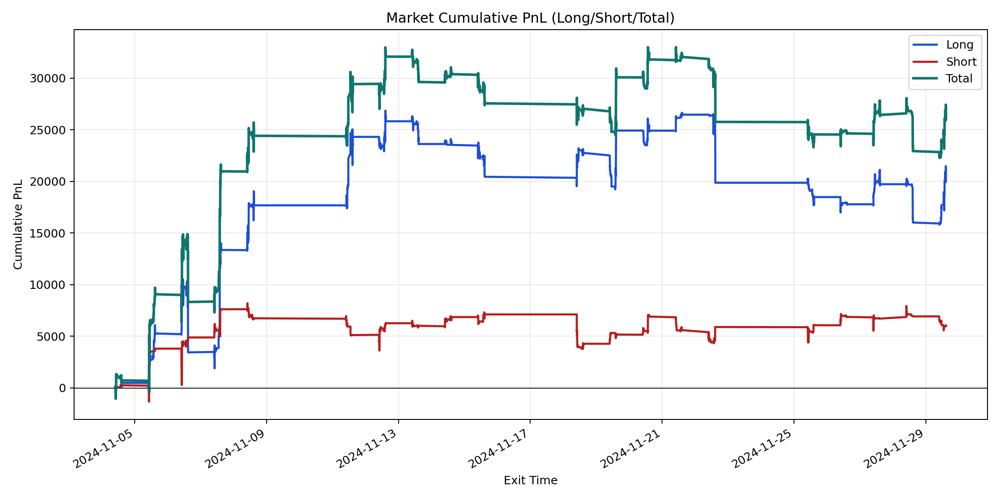
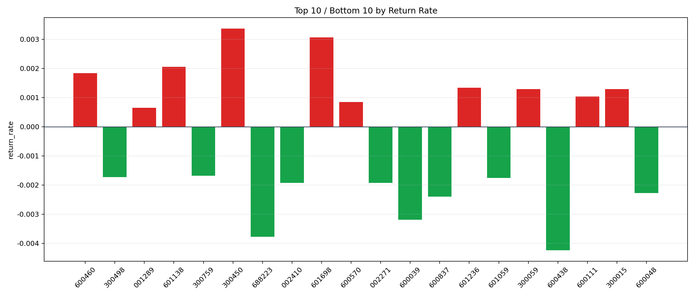

| repo_root | /home/haoranyou/data/output/alpha0.4_1w_5s_3ticks_index_filter/index_weights_300 |
|---|---|
| period_months | 1 |
| period_label | 2024-11-04_to_2024-11-29 |
| start_time | 2024-11-04 09:50:52 |
| end_time | 2024-11-29 14:45:02 |
| n_trades | 9127 |
| n_symbols | 55 |
| total_pnl | 26053.981650000052 |
| long_total_pnl | 20009.408800000023 |
| short_total_pnl | 6044.572850000031 |
| total_entry_notional | 80474901.0 |
| long_entry_notional | 60352716.0 |
| short_entry_notional | 20122185.0 |
| total_return_rate | 0.0003237528884937684 |
| long_return_rate | 0.00033154114886892617 |
| short_return_rate | 0.0003003934637316987 |
| top_symbols_by_return | ["300450", "601698", "601138", "600460", "601236", "300015", "300059", "600111", "600570", "001289"] |
| bottom_symbols_by_return | ["600438", "688223", "600039", "600837", "600048", "002271", "002410", "601059", "300498", "300759"] |

